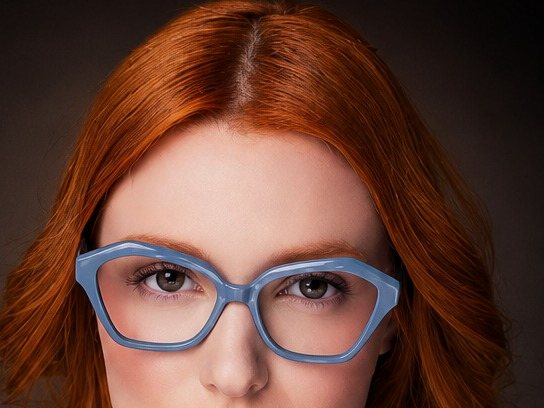
01, curadoria de marcas
RHluxo, Salvatore e RH Kids
Eu seleciono, entre as marcas que represento, os modelos e as cores que combinam com o seu público. Você compra o que tem mais chance de girar.
J.Marcos, representante comercial para óticas
Levo coleções exclusivas, marca própria e curadoria de mix que tiram a sua vitrine da guerra de preço. Peça que o cliente não encontra na loja ao lado é peça que você precifica.
O que eu vejo nas visitas
Muita ótica boa trabalha com as mesmas marcas da concorrência. O cliente experimenta na sua loja, pesquisa no celular e acha a mesma armação mais barata em outro lugar.
Se o modelo está em todo lugar, o cliente não tem motivo para escolher você.
Com a referência na mão, a venda vira uma disputa de desconto.
Você vende, mas sobra pouco por peça no fim do mês.
Quem sou
Vou para entender quem entra na sua loja, o que ele procura e quanto ele paga. Com isso, monto junto com você uma vitrine que vende melhor e deixa mais dinheiro em cada peça.
Como eu transformo a vitrine
Dá para começar pequeno e crescer. Em todos eles o objetivo é o mesmo: vender peças que o cliente não compara, com mais lucro em cada venda.

01, curadoria de marcas
Eu seleciono, entre as marcas que represento, os modelos e as cores que combinam com o seu público. Você compra o que tem mais chance de girar.
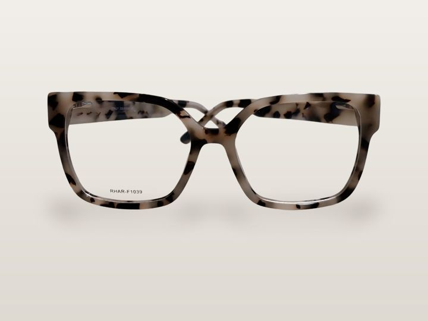
02, coleção autoral
Coleção com desenho próprio em acetato italiano, nas linhas F e H. Peças que o seu cliente não encontra em qualquer ótica.
03, marca própria
Escolhemos juntos formatos e cores da chapa, e a haste leva a sua marca. É o cliente lembrando da sua loja, e não da marca dos outros.
Margem e faturamento
Quando a armação é exclusiva da sua loja ou leva o seu nome, o cliente para de comparar referência e passa a comparar o que vê no espelho. O preço volta a ser seu, sobra mais em cada venda e o faturamento cresce sem você precisar vender mais peças.
Quero conversar sobre issoFaça a conta
Mexa nos números da sua loja. Você vê na hora quanto o lucro pode crescer quando uma parte das vendas passa a ser de peças exclusivas.
A mais por ano
A mais por mês
Crescimento do lucro
Simulação ilustrativa. O resultado real depende do seu preço, do seu público e do mix que montarmos juntos.
Profundidade de cor, brilho e veios que mudam de peça para peça. Uma armação que se explica sozinha no balcão e justifica um preço melhor.
Chapa de acetato italiana
Toda armação nasce de uma chapa de acetato italiana. É esse começo que deixa a cor viva, o brilho fundo e a peça firme no rosto do cliente.
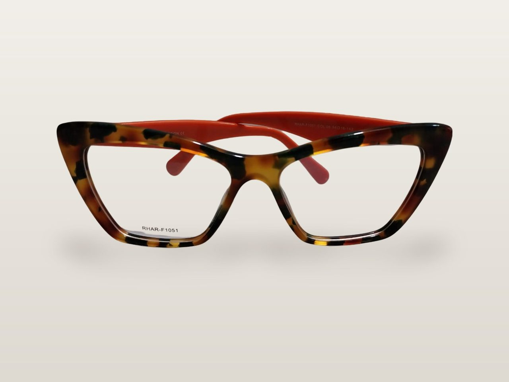
Acetato de celulose em chapa, com a cor formada dentro do material, em camadas. Por isso o tartaruga tem profundidade.
Frente e hastes saem recortadas da chapa, no desenho de cada modelo da coleção.
A peça é desbastada e polida até ganhar o brilho que o cliente vê no espelho.
Cada armação sai com a referência na lente de demonstração e a marcação Italy Design na haste.
Algumas peças das coleções que levo às óticas. Do gatinho marcante ao redondo clássico, cada cor conversa com um estilo de cliente.
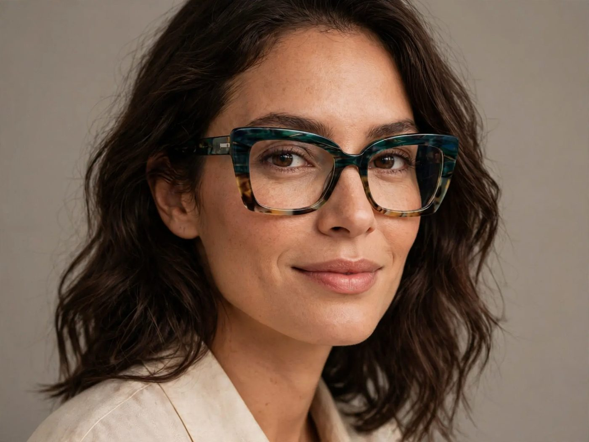
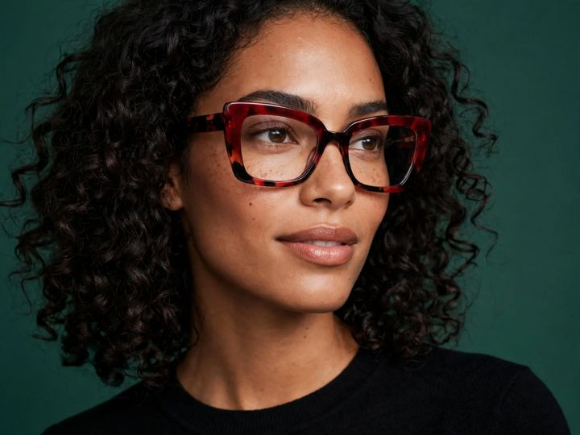
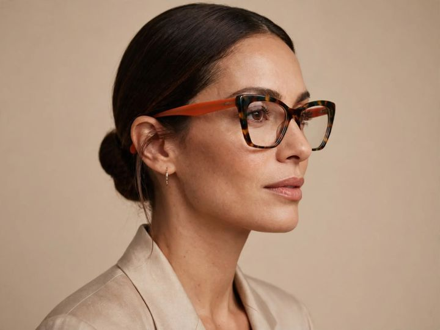
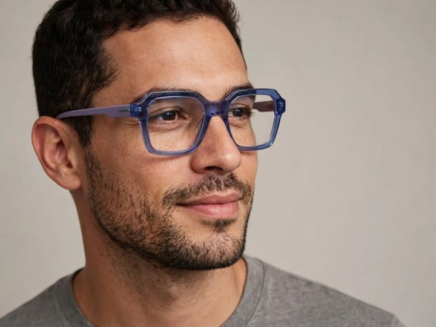
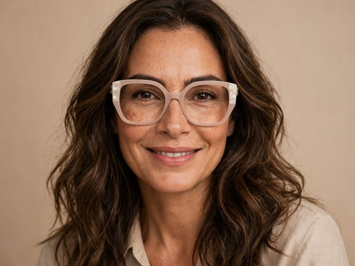
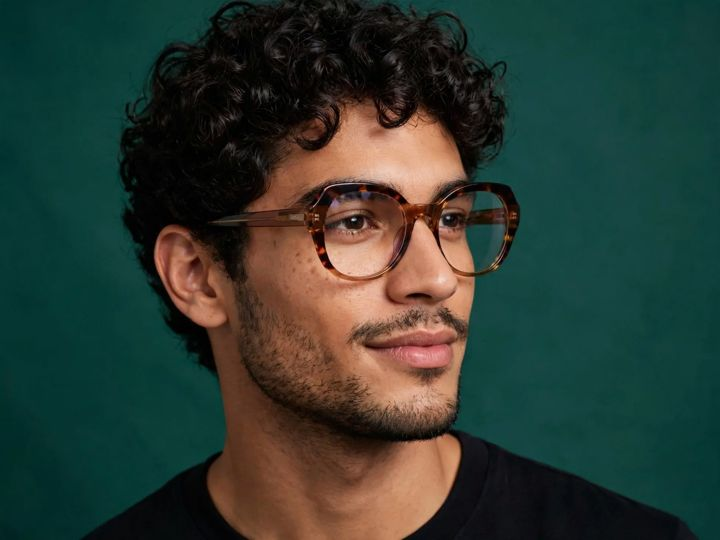
Fotos de modelo criadas com inteligência artificial a partir das armações reais.
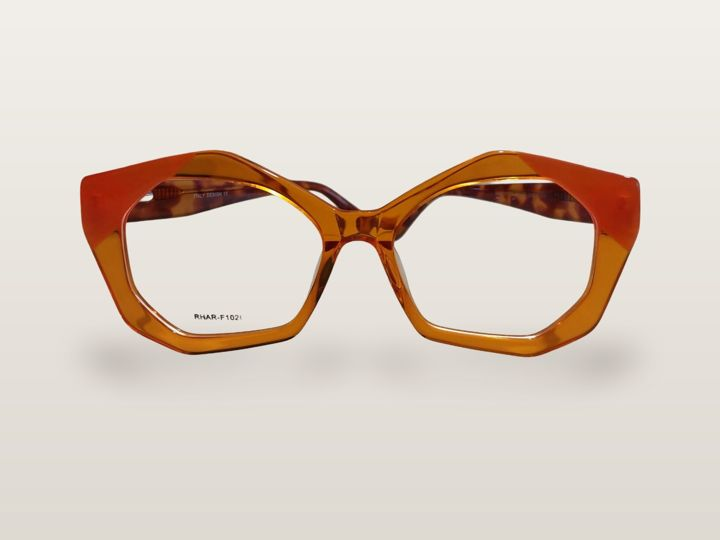
Você me conta sobre a loja, o público e a faixa de preço que mais vende.
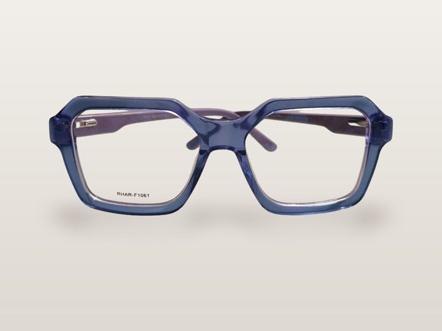
No Rio de Janeiro, levo as peças até você. Fora do RJ, mando fotos e vídeos de perto de cada cor.
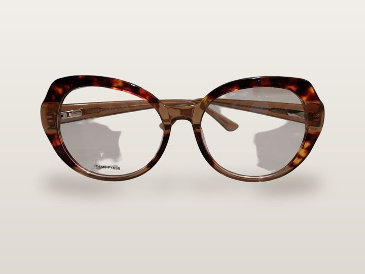
O pedido vai direto para o endereço do CNPJ da sua ótica. Depois, olhamos juntos o que saiu para acertar a próxima reposição.
É. Dá para começar com uma curadoria de poucas peças e crescer conforme a vitrine responde. A marca própria pode vir depois.
O cliente compra o que vê no rosto. Uma peça com desenho e cor que ele não acha na ótica do lado vira argumento de venda seu, e não de outra marca.
No Rio de Janeiro eu levo as peças até você para ver na mão. Fora do RJ, mando fotos e vídeos de perto de cada cor antes de você fechar o pedido.
Escolhemos juntos os formatos e as cores da chapa, e a coleção sai com o nome da sua ótica. Me chama para conversar sobre quantidades e prazos.
Sem problema. Peça o catálogo e compare cor, acabamento e condições com o que você já tem na loja.
Preencha e o WhatsApp abre com a mensagem pronta. Eu respondo pessoalmente.